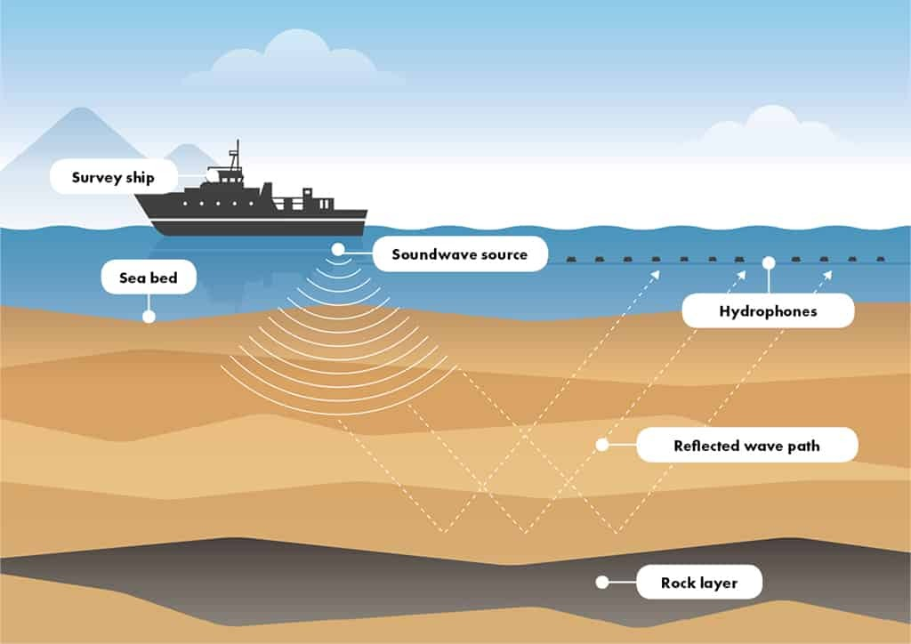
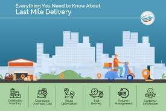
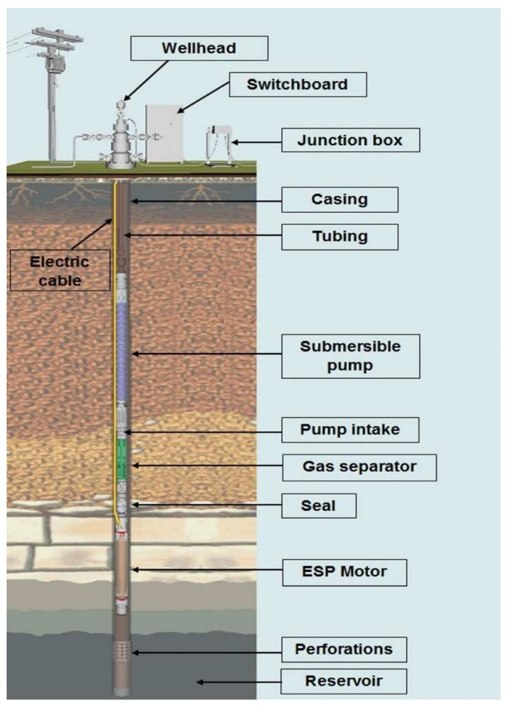

<section class="py-10 bg-gray-900">
    <div class="container mx-auto px-4">
      <div class="relative w-full h-40 md:h-48 flex items-center justify-center bg-cover bg-center rounded-xl mb-6 overflow-hidden" 
     style="background-image: url('/assets/img/daniil-silantev-2rb4lu53060-unsplash.jpg'); background-size: cover; background-position: center;" loading ="lazy">
  
  <!-- Light Overlay -->
  <!-- <div class="absolute inset-0 bg-white bg-opacity-1 rounded-xl"></div> -->

  <div class="relative text-center text-white">
    <h2 class="text-3xl md:text-5xl font-bold mb-2">
      <span class="bg-gradient-to-r from-purple-500 to-pink-500 bg-clip-text text-transparent">Projects & Research</span>
    </h2>
    <div class="w-16 h-1 bg-gradient-to-r from-purple-500 to-pink-500 mx-auto"></div>
  </div>

</div>


      
      
      
      <div class="grid grid-cols-1 md:grid-cols-2 lg:grid-cols-3 gap-8">
        <!-- Project 1 -->
        <div class="bg-gray-800 rounded-xl overflow-hidden shadow-lg">
          <div class="h-48 bg-purple-900 relative">
            
            <div class="absolute inset-0 flex items-center justify-center">
              <h3 class="text-xl font-bold text-white px-4 text-center">SEISMIC ACQUISITION WITH AUTOMATION</h3>
            </div>
          </div>
          
          <div class="p-6">
            <div class="flex justify-between items-center mb-4">
              <span class="text-purple-400">Nov 2015 - Present</span>
              <span class="bg-purple-900 bg-opacity-50 px-3 py-1 rounded-full text-purple-300 text-xs">UTM University</span>
            </div>
            
            <p class="text-gray-300 mb-6">
              Developed an innovative method for seismic acquisition using automation software such as PLC, SCADA, 
              and ETMEGA CIRCUITS to reduce manpower and costs while increasing efficiency.
            </p>
            
            <div class="flex justify-end">
              <button class="text-purple-400 hover:text-purple-300 flex items-center" (click)="toggleProject1()">
                <span>Read {{ showProject1 ? 'Less' : 'More' }}</span>
                <svg xmlns="http://www.w3.org/2000/svg" class="h-5 w-5 ml-1" viewBox="0 0 20 20" fill="currentColor" 
                     [class.transform]="showProject1" [class.rotate-180]="showProject1">
                  <path fill-rule="evenodd" d="M5.293 7.293a1 1 0 011.414 0L10 10.586l3.293-3.293a1 1 0 111.414 1.414l-4 4a1 1 0 01-1.414 0l-4-4a1 1 0 010-1.414z" clip-rule="evenodd" />
                </svg>
              </button>
            </div>
            
            <div *ngIf="showProject1" class="mt-4 border-t border-gray-700 pt-4">
              <p class="text-gray-300 mb-4">
                This innovation utilizes the fundamental concept of sound waves with automation to operate seismic 
                acquisition remotely. The system is powered by renewable energy sources like portable wind mills 
                with solar panels, reducing electricity costs.
              </p>
              <p class="text-gray-300">
                By implementing this technology, we completely reduce the physical effort required in field areas, 
                making the process more economical in terms of both money and manpower while maintaining accuracy.
              </p>
            </div>
          </div>
        </div>
        
        <!-- Project 2 -->
        <div class="bg-gray-800 rounded-xl overflow-hidden shadow-lg">
          <div class="h-48 bg-purple-900 relative">
            
            <div class="absolute inset-0 flex items-center justify-center">
              <h3 class="text-xl font-bold text-white px-4 text-center">Last Mile Delivery for E-commerce</h3>
            </div>
          </div>
          
          <div class="p-6">
            <div class="flex justify-between items-center mb-4">
              <span class="text-purple-400">May 2018 - Jul 2018</span>
              <span class="bg-purple-900 bg-opacity-50 px-3 py-1 rounded-full text-purple-300 text-xs">Allcargo Logistics Ltd</span>
            </div>
            
            <p class="text-gray-300 mb-6">
              Designed a comprehensive last mile delivery channel for e-commerce partners through market research, 
              surveys, and vendor collaboration to optimize delivery efficiency.
            </p>
            
            <div class="flex justify-end">
              <button class="text-purple-400 hover:text-purple-300 flex items-center" (click)="toggleProject2()">
                <span>Read {{ showProject2 ? 'Less' : 'More' }}</span>
                <svg xmlns="http://www.w3.org/2000/svg" class="h-5 w-5 ml-1" viewBox="0 0 20 20" fill="currentColor" 
                     [class.transform]="showProject2" [class.rotate-180]="showProject2">
                  <path fill-rule="evenodd" d="M5.293 7.293a1 1 0 011.414 0L10 10.586l3.293-3.293a1 1 0 111.414 1.414l-4 4a1 1 0 01-1.414 0l-4-4a1 1 0 010-1.414z" clip-rule="evenodd" />
                </svg>
              </button>
            </div>
            
            <div *ngIf="showProject2" class="mt-4 border-t border-gray-700 pt-4">
              <p class="text-gray-300 mb-4">
                Day-to-day activities included conducting market research and surveys, developing blueprints for the 
                delivery channel, meeting with various vendors, and costing different delivery models.
              </p>
              <p class="text-gray-300">
                Also performed a comprehensive SWOT analysis of AllCargo Logistics to identify strengths, weaknesses, 
                opportunities, and threats in implementing the new delivery system.
              </p>
            </div>
          </div>
        </div>
        
        <!-- Project 3 -->
        <div class="bg-gray-800 rounded-xl overflow-hidden shadow-lg">
          <div class="h-48 bg-purple-900 relative">
            
            <div class="absolute inset-0 flex items-center justify-center">
              <h3 class="text-xl font-bold text-white px-4 text-center">Gas Interference in ESP</h3>
            </div>
          </div>
          
          <div class="p-6">
            <div class="flex justify-between items-center mb-4">
              <span class="text-purple-400">2016 - 2017</span>
              <span class="bg-purple-900 bg-opacity-50 px-3 py-1 rounded-full text-purple-300 text-xs">Research Project</span>
            </div>
            
            <p class="text-gray-300 mb-6">
              Researched solutions to mitigate gas interference in Electric Submersible Pumps (ESP) for 27 wells 
              of an Indian Offshore field to enhance production efficiency.
            </p>
            
            <div class="flex justify-end">
              <button class="text-purple-400 hover:text-purple-300 flex items-center" (click)="toggleProject3()">
                <span>Read {{ showProject3 ? 'Less' : 'More' }}</span>
                <svg xmlns="http://www.w3.org/2000/svg" class="h-5 w-5 ml-1" viewBox="0 0 20 20" fill="currentColor" 
                     [class.transform]="showProject3" [class.rotate-180]="showProject3">
                  <path fill-rule="evenodd" d="M5.293 7.293a1 1 0 011.414 0L10 10.586l3.293-3.293a1 1 0 111.414 1.414l-4 4a1 1 0 01-1.414 0l-4-4a1 1 0 010-1.414z" clip-rule="evenodd" />
                </svg>
              </button>
            </div>
            
            <div *ngIf="showProject3" class="mt-4 border-t border-gray-700 pt-4">
              <p class="text-gray-300 mb-4">
                The wells had good productivity indices but faced challenges due to lower bubble point pressure than 
                formation pressure, causing gas interference. The study analyzed previous ESP failures to design 
                successful solutions.
              </p>
              <p class="text-gray-300">
                Proposed solutions included Standard ESP operation using Turpin and Dunbar correlation, Tapered ESP Pump 
                deployment, Shrouded ESP units, and Multi-vane ESPs to handle the gas interference effectively.
              </p>
            </div>
          </div>
        </div>
      </div>
    </div>
  </section>